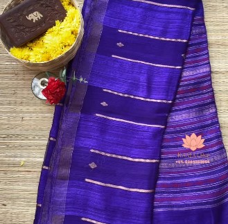
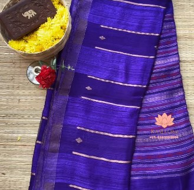

Assamia Chatai
Intro & History: Assamia Chatai (also called Chatai or basket-weave silk) is a traditional weave from Assam, with roots dating back to ancient texts like the 4th-century references to Muga silk in Kamarupa. The technique evolved among tribal communities using back-strap looms and natural Muga or Eri silk, preserving indigenous patterns through generations.
Significance & Work: The saree features a distinctive basket-weave (chatai) texture created by interlacing warp and weft in a tight, geometric pattern, often with golden Muga silk giving a natural sheen. Motifs include tribal symbols, geometric borders, and subtle checks. Lightweight, breathable, and lustrous, it is ideal for Assam's humid climate yet elegant enough for special occasions. Assamia Chatai represents Northeast India's rich tribal heritage, sustainable silk traditions, and the enduring skill of indigenous weavers — a rare and culturally significant piece.
 
